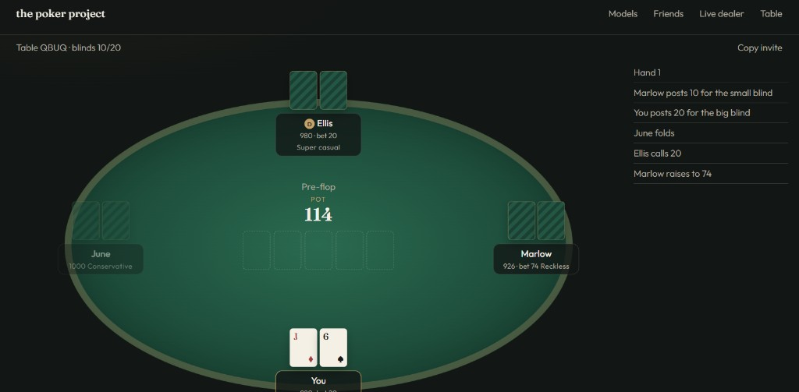
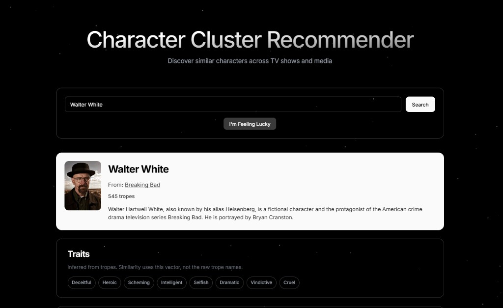
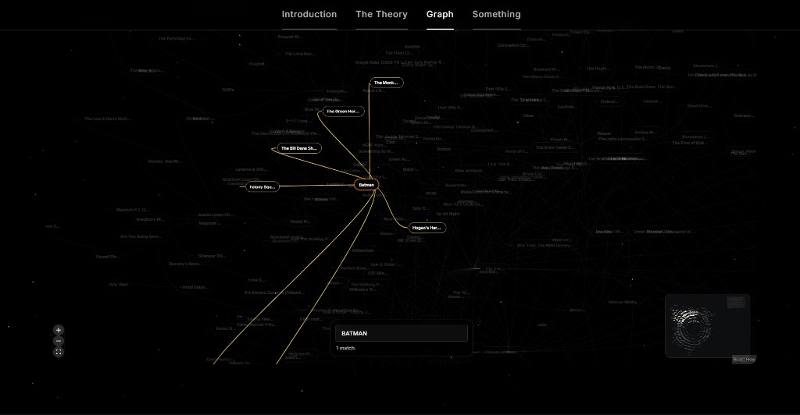
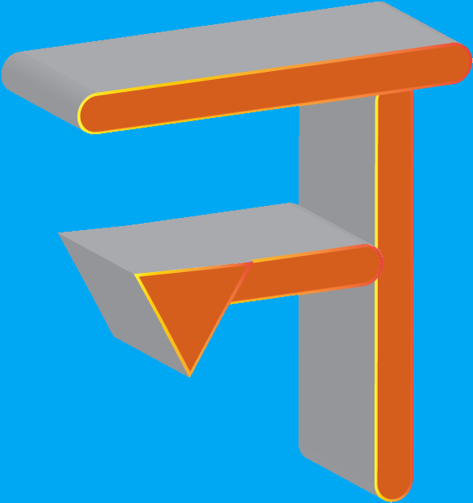

25+
Hi, I am
Archit Goswami
I'm a back-end & cloud developer who loves building scalable systems and turning messy problems into simple, dependable solutions.
About Me
I am a back-end cloud developer specializing in designing scalable, cloud-based solutions.
3+
Years Experience
Here are a few technologies I've been working with recently:
Experience and Education
M.S. in Engineering, Computer Science
Johns Hopkins University
Studying Machine learning, Neural Networks, Transformers, Information Retrieval, and Networking from some of the most revered faculty in the country. Part of Cataract Research studies under Dr. Swaroop Vedula and Dr. Vishal Patel.
Software Engineer
Oracle America Inc.
Delivered production level projects in automated deployment / Infrastructure as code (DevOps + CICD), metrics, state systems, and automated hardware triage and repair.
Software Engineer Intern
Oracle America Inc.
Worked on scalable systems and gained experience with Oracle's technology stack. Contributed to internal tools and created automated report for testing vulnerability using a novel recursive API fuzzer test generator.
Project Lead and Undergraduate Research Assistant
Shriver Anthropological Genomics Lab
Restructuring and improving Fibermorph along with hiring and leading for a 4-member dev team under Dr. Tina Lasisi to improve the Fibermorph python package for automated analysis of hair morphology.
B.S. in Computer Science, Minor: Engineering Leadership and Development
The Pennsylvania State University
Certifications
Fundamentals of Building AI Agents
IBM
Covers designing AI agents that reason and act independently, including tool calling/chaining, LangChain-based agent workflows for data analysis and visualization, and prompt engineering best practices for agentic systems.
Verify CredentialOCI Certified Foundations Associate
Oracle
Validates foundational knowledge of core OCI services (Compute, Storage, Networking, Database, Analytics, AI, and Observability), OCI security/identity model, billing, and governance.
Verify CredentialFeatured Projects




Get In Touch
I'm currently looking for new opportunities. Whether you have a question or just want to say hi, my inbox is always open. I'll try my best to get back to you!